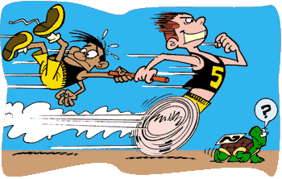

Cia. Ex-sedentário
vamo, vamo, vamo…

http://www.mundoredondo.com.br
O Claudio me convidou para a Corrida de Natal da Corpore. E eu topo! Topo! Por que não?
.
.
.
Assim terminamos o anos com mais uma corrida. Mais um desafio.
.
.
.
Hoje de manhã, treinei 50 minutos (T019, o T018 não foi registrado no blog), encontrei minha mãe no trajeto. O caminhar dela é na mesma velocidade do meu trote. Sempre me impressionei com a velocidade do caminhar da minha mãe!
.
.
.
E ai turma, vamos nos inscrever? vamos lá!
 Pensei muito para escolher o título deste post, mas a única coisa que veio a cabeça foi a palavra “Cheguei”.
Pensei muito para escolher o título deste post, mas a única coisa que veio a cabeça foi a palavra “Cheguei”.
Pois é, cruzei a linha de chegada após 10 quilômetros.
Na largada tudo é muito emocionante, aquele mar de gente com camisa azul. Depois foi 1, 2, 3 quilômetros… cansando… 4… e me deu hiperventilação, foi uma sensação muito estranha e continuei andando a passos largos e rápidos, sempre ditados pelo Claudio que me acompanhou o tempo todo, mesmo tendo folego para ir a frente.
Ai por diante foi alternância entre corrida e caminhada, mais caminhada que corrida. Meu corpo aguentava mas minha respiração não… Parecia ser impossível a chegada. No quilômetro 7 consegui até uma boa arrancada e finalmente CHEGUEI. E tem até um vídeo para mostrar isso.
A maior alegria foi ter o apoio do Claudio o tempo todo do meu lado, falando, incentivando, torcendo e me envergonhando 🙂 . E o abraço na linha de chegada foi o dos melhores.
Consegui, consegui, consegui, consegui, consegui… eu Cheguei…
O retorno no cardiologista está marcado para quinta-feira, 19.11.2009. Chegando a data me dei conta de que não tinha pegado pedido de exames. Sem ele, dificil um acompanhamento. Liguei e passei correndo na sexta-feira para retirá-lo a tempo fazê-lo antes da consulta. Como sempre faço um dia útil antes, sequer li o exame, dobreio-o e guardei no meio do livro do Dean Kernazes. Quando fui lê-lo, ontem, que percebi que tinha exames novos, nunca feitos antes. Trata-se de exames específicos para diabete. Um deles é o chamado teste da curva glicemica, para o qual deverei ficar duas horas no Laboratório. Então aquele açucar todo no sangue do último exame pode não ser apenas a barriga, como amenizou o médico. Embora eu tenha dito aqui em casa que não ficaria estressado caso a suspeita se concretize, devo confessar: estou ansioso. Ainda mais que não tinha nenhum laboratório que pudesse faze-lo logo. Só o farei dia 23.11. Terei de voltar ao médico (19.11) sem o exame. Chato isso.
Aguarde que eu conto o desfecho disso.
Mês de novembro é dificil para todo mundo. A falta de posts por aqui representa bem isso. Estou bastante ansioso com relação à avaliação de final de semestre lá na PUC. Quanto aos treinos, sou grato à insanidade do mês de outubro. Graças àquele esforço todo agora quando consigo ir à rua agora, faço com tranquilidade. Claro que sem grandes expectativas. A última corrida tinha sido na quarta-feira a noite. Quinta e Sexta sem treino e sem sono digno. Sábado eu não corri, mas fiz bastante exercício físico incluindo agachamento, flexões de braço e outros mais. Domingo, nada.
Saí para treinar segunda a noite, às 22:40 horas. Embora tivesse disparado o cronômetro eu não olhei para ele nenhuma vez durante o treino. O treino fluiu muito bem. Foi também o meu terceiro treinabento. Foram 45 minutos. Mesmo passando das 23:00 horas muitos carros na rua, o que não combina com treinabento. Não ter ficado preso ao relógio foi muito bom. Acho que só não prossegui por mais tempo porque estava com a boca seca. Da próxima vez levarei uma garrafinha. Espero que este mês passe logo, mas que não deixe sequelas. Meus projetos para o mês de janeiro inclui fazer uma sonoterapia.
Tenho de colar estas notícias da folha, para não me esquecer que ainda estou nos primeiros passos para um sono bom. Livre de mazelas como as descritas. Se eu estivesse como no primeiro semestre certamente teria vergonha de veicular isso. Mas agora deve servir como um alerta de que há um caminho ainda muito longo para eu percorrer. Eu estava no fundo do poço. Comemorei aqui, com você, ter tirado os pés do lamaçal. Mas é chegada a hora de me dar conta de que estou apenas segurando na ponta da corda presa ao sarilo. Cabe só a mim, persistir, e girá-lo uma vez por dia, todos os dias, até que eu finalmente saia do poço para a plenitude da vida.
Primeiro ato de resignação: Tenho de dizer, mesmo com essas notícias. Só fiquei uma hora e meia na cama. Inconcebível. Antes de entrar no escritório tomei um café expresso amargo e um energético (um cada mão, alternando as goladas) revendo a cena, agora, é deprimente. Se já dei o primeiro passo, tenho de partir para o segundo, depois o terceiro…
Também treinei duas vezes a noite, fugindo do que eu havia programado. Voltar ao plano A.
Não posso perder o foco.
EU CONSEGUIREI!
Gostaria de postar este título em forma de cordel, mas o adiantado da hora não me permite este luxo. Bem. Não treinei sábado, domingo, segunda e terça, por uma série de desculpas, as quais não valem a pena falar.
Terça-feira, minutos antes do apagão ia caminhando pela Paulista quando de repente reconheço uma bike, bem atípica em razão do garfo segurar a roda dianteira por apenas uma das extremidades do eixo. Muito louca, do lado da bike dois caras sentados no café que tem na entrada do conjunto nacional. Eu jamais os reconheceria, mas a bike… Não resisti e tietei mesmo. Pedi permissão para cumprimentá-los e ganhei dos amigos. Foi um encontro realmente inspirador. Acho que é o universo conspirando para a gente se tornar no que diz o nome deste blog.
Carlos Dias e Francisco. Que acabaram de chegar dos Estados Unidos após cruzá-los por 5000 kilomentos, corridos em 2 meses. O Carlos correndo e o Francisco pedalando. A saga dos dois está no site webrun e no blog do Carlos Dias, há citação também no blog do Rodolfo Lucena e outros tantos que admiram os feitos desse ultramaratonista e mega ser humano.
Quarta-feira, cheguei mais cedo da puc e as 23:00 horas me joguei na rua acompanhada do meu fiel amigo Bento. Cachorrinho, bonito, esguio, magrinho, que inveja. Se comportou muito bem, não tive de puxar a guia ou tirá-lo da minha frente nenhuma vez sequer. Sempre do meu lado, galhardio. Orgulho do dono. Foram 22 minutos de trote dos bons. Decidido nas subidas. Pomposo nas planuras e eficente nas descidas. Muito bom. Poderia ter treinado mais um tempinho, mas esta semana está bem estressante.
Pois é pessoal estou sumido, mas ainda estou correndo semana passada treinei quase todos os dias e no final de semana treinei somente no sábado, foi um treino de 6km hoje corri mais 6km queria correr mais um pouco mas o tempo era pouco somente 30min pra treinar.
Parece que de uns dias pra cá estou mais preguiçoso pra levantar, mas levanto com a mesma estratégia do despertador fora do alcance.
E ai claudio como estão os treinos? E você Alex bora rapaz.

Prefiro treinar sempre pela manhã. Dificil não desejar isso depois de ler o livro Semente da Vitória, do Nuno Cobra. Não consegui levantar na terça e na quinta (ontem) de madrugada sequer fui capaz de ouvir o despertador. Como comentei com o Alecão, à medida que meu sono vai melhorando, mais dificil também fica levantar com poucas horas de sono. É o meu organismo entrando nos eixos. Agindo e reagindo como o de uma pessoa normal. Esse pensamento, no decorrer do dia, deu-me um certo alento.
Três meses de blog e tenho a dizer que estou começando a sentir mudanças de postura e atitude, que estão mais espontãneas no que diz respeito às corridas. Ontem a noite, em casa, por exemplo, comecei a me alongar no tapete sala, enquanto conversava com a Mari. Esticava daqui, puxava de lá, e tentava, nos intervalos, executar a pranchinha ensinada pelo Thiago (as séries não passam de vinte segundo, quando o recomendado é um minuto, cada). Alongado e, mais do que aquecido com aquele calor todo, decidi correr. Mas na boa, porque deu vontade e não porque eu não tinha corrido nos dias e horas planejados. Simplesmente me joguei na rua. Sem relógio. Sem pressa. Passinho curto. Movimento de braço e postura ereta (ai minhas costas). Encontrei um amigo: o Edy. Corredor único, porque não conheço ninguém como ele, capaz de subir correndo de madrugada (05:00 hs)o Pico do Jaraguá, mesmo tendo jantado às 23:00 horas da noite anterior, um ultra mega porção de torresmo. Caminhamos uns 15 minutos, planos de treinarmos juntos de madrugada, o que para ele não é problema, e de lá parti no meu trotinho safado. Mas confortável. Desafiador no ponto certo, mas confortável. Muito mais confortável do que a caminhada da segunda-feira. Corri pela Avenida 1, que não se chama 1, antes que chegasse no fim dela, encontrei o meu vizinho Fábio, que não é o Namitu, mas o Yamamoto, que vinha da direção contrária, de bike. Até prometeu me acompanhar todas as quintas, se for a noite (ele não consegue nem quer tentar levantar de madrugada). O Japa é uma figura, mesmo fumante, subia correndo o Pico do Jaraguá puxando o skate, em cima do qual, desce alucinadamente por aquelas curvas mortais. Como eu dei meia volta para poder falar um pouco com ele, indaguei-o se aquele meu trote era safado demais, visto de longe. Como amigo, entusiasta e também feliz pela minha inciativa, acabou exagerando ao dizer que era até bonito. Depois se corrigiu dizendo que o que importava era que com o tempo o trote viraria corrida. Agora sim Cara Amarela.
Foram dois vai-e-vens pela Avenida Um, com as caminhadas do antes e depois. Eu não vi a hora que saí. Cheguei às 23:00 horas. Tomei um banho e ainda fui ao Extra fazer compras para casa. Pulei da cama hoje às 04:45 e meio zonzo vi que garoava e fiz as minhas contas. Bom. Seis horas de intervalo entre um treino e outro não teria problemas, mas só duas horas e meia de sono. Daí não dá. Voltei pra cama. Decisão sensata. Decisão correta.
Galera, me desculpem a demora para postar algo, mas é que ando meio corrido.
Fiz uma loucura na minha vida, alias loucura financeira, pois para minha qualidade de vida foi a melhor das escolhas. Semana passada recebi uma proposta para trabalhar em uma multinacional “Ibermática” em Jundiaí, cidade onde vive meus familiares. A Cidade é muito bonita, tranquila e ótima para fazer minhas atividades físicas, correr, caminhar e etc, creio que será de grande ajuda nos meus treinos e vou ter mais motivação. Fora que é tudo bem mais perto, meu trabalho por exemplo vai ser 20 min de onde vou ficar. Bom, mas voltando ao que disse sobre loucura financeira, disse isso porque meu salário será a metade do que ganho hoje, claro que tende a aumentar com o tempo, mas algumas contas vão ter que esperar. rsrs
O fato de estar corrido é que vou começar dia 16 na outra empresa e estou agilizando os projetos onde trabalho atualmente e os demais preparativos para a mudança. Acredito que após mudança vou conseguir postar semanalmente minhas rotinas, treinos e se a mudança valeu a pena. Me desejem boa sorte =)
Mudando de assunto, uma dica que queria compartilhar que está me ajudando muito, é sobre a revista Men’s Health para os homens ou Women’s Health para as mulheres (Eu compro as 2). Esta revista traz diversas dicas para o homem/mulher “moderno” que se preocupa com a saúde. Tem uma leitura bem interessante e amigável, recomento a todos.
Sábado eu não treinei. Mas não lamentei, porque foi um dia em que fui pró-ativo. As brincadeiras com o filhão na praia, teriam sido bem outras caso eu não estivesse labutando em direção ao ex-sedentarismo.
Domingo: Caminhada ritmada por 120 minutos (das 08:00 as 10:00) na ciclovia de Praia Grande, na companhia do meu anfitrião. Muito bom.
Mas bem que eu poderia ter terminado o domingo sem ter ingerido tanto alcool e comido tanto churrasco. Abusei realmente. Missão pós esbórnia: DELETÁ-LA da mente e bola pra frente.
Segunda-feira. Acordei tarde e sentindo o peso de toda aquela carne da noite anterior. As 17:00 saí como quem iria correr a São Silvestre. Que nada. A quantidade abusrda de café que tinha tomado desde o almoço (para não dormir enquanto estudava para a pós) fez com que eu sentisse uma queimação danada no estômago e a boca seca demais. Também estava encanado por não estar usando bermuda térmica (viciei). O combinado era que eu corrreria num circuito (Raimundo-Marginal- Toronto-City-Anastácio-Mutinga-Raimundo) de sete quilometros. Só caminhei. 01:20 de caminhada contando duas paradas para molhar a boca.
Não treinei hoje de madrugada. Disso me arrependo, porque na quarta-feira o bom senso já me proibiu, pelo menos até dezembro (folga da pós). Esta foi a veradeira mancada da semana. Não fazer o treino da terça (eleito por mim mesmo como obrigatório).
Impus para mim que terça e quinta são de treinos obrigatórios, para os quais levantarei 04:30 mesmo que eu não precise (neste caso posso aproveitar para caprichar na hidratação e aquecimento). Sexta me impus atividade. Já que não tenho um cross country ainda, vale uma caminhada ou treino introspectivo como o da última sexta (quem dera eu tivesse um toda semana).
Fica registrado o ponto negativo pelo não treino no dia de treino obrigatório.
.jpg "DSC01732 (1024x576)")
.jpg "DSC01769 (1024x576)")
.jpg "DSC01800 (1024x576)")
.jpg "DSC01842 (1024x576)")
.jpg "DSC01933 (1024x576)")


Nós somos 100 Juízo
Nós somos Baleias
Últimos comentários